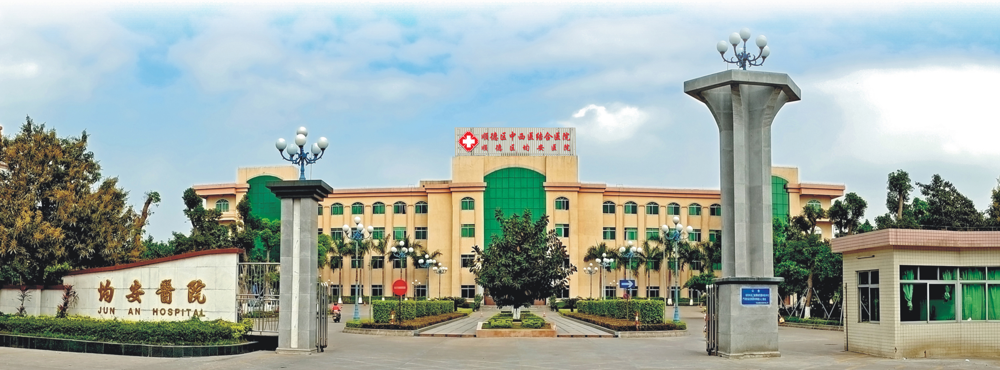

佛山市顺德区中西医结合医院
（佛山市顺德区均安医院）
始建于1958年，是一所集医疗、预防、保健、康复、教学等功能于一体的二级甲等医院，是中山大学孙逸仙纪念医院医疗技术协作医院、全国综合医院中医药工作示范单位、国家胸痛中心（基层版）和卒中中心。


医院概况
- 医院地址：佛山市顺德区均安镇百安路7号
- 始建时间：1958年
- 占地面积：4万多平方米
- 建筑面积：3万多平方米
- 医院等级：二级甲等综合医院
- 核定床位：308张
- 在职人员：450人
- 科室设置：临床、医技科室共32个
- 联系方式：0757-25382229（人事科）
专科特色与设备
重点专科
- • 中西医结合科（佛山市重点培育专科、顺德区重点专科）
- • 普通外科（顺德区重点培育专科）
特色中心
- • 中国中西医结合结石病防治总基地首个县区级中心
- • 中山大学附属第三医院中南区域感染科（肝病）专科联盟区域分中心
- • 广东省微生态治疗工程技术研究中心顺德分中心
医疗设备
- • DR、CT、MRI等高端设备
- • 各类微创手术用镜
- • 各种全自动检验检测仪器
专家团队
- • 柔性引进10多支省级三甲医院专家团队
- • 与中山大学孙逸仙纪念医院建成骨病专科医联体
- • 开展多种腔（内）镜下微创手术
发展前景
力争三年内把医院建设成"西医优势明显、中医特色突出、中西结合效果显著、立足均（安）顺（德）、辐射中（山）江（门）"的现代化三级中西医结合医院。
官方宣传平台
服务号

订阅号